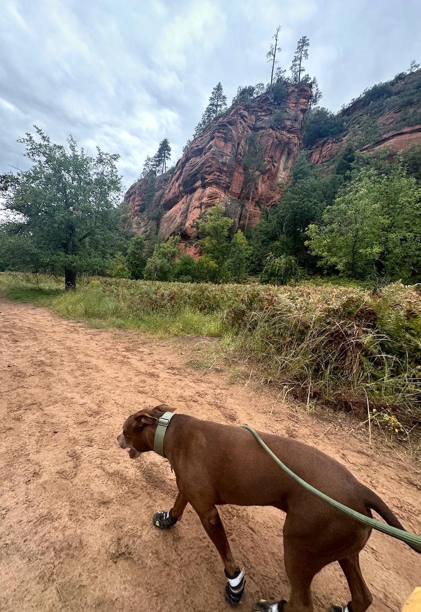
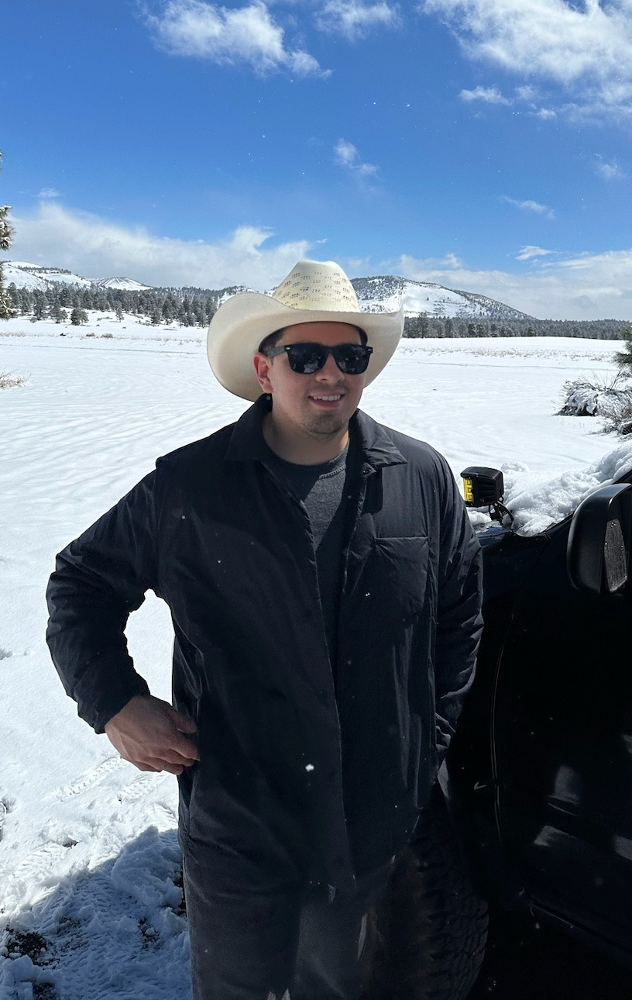
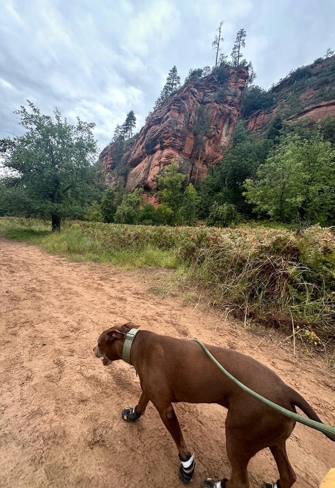
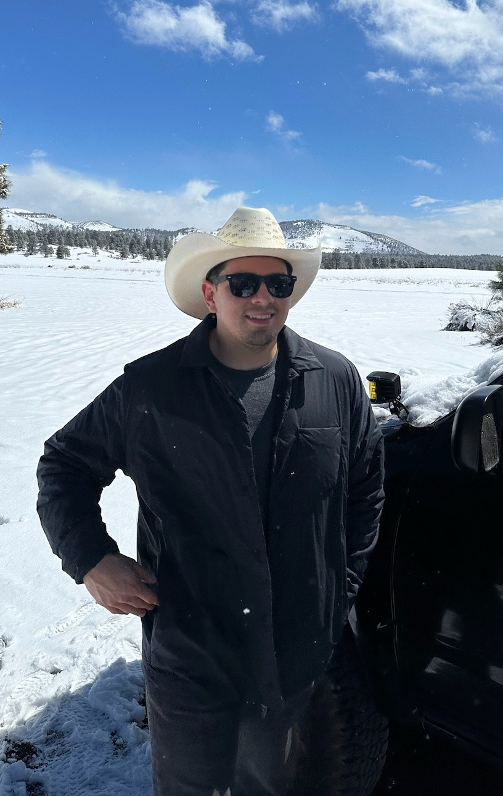

Ivan Ramirez
Welcome! I’m a Data Analytics Consultant with over 5 years of experience specializing in tax fraud and noncompliance. I help clients uncover insights and deliver data-driven solutions by leveraging tools like SQL, Excel, and Python. My work focuses on streamlining reporting, identifying opportunities, and optimizing business processes. I’m a collaborative problem solver, known for being a fast learner and detail-oriented. I take pride in delivering high-quality analysis that drives real business value, improves efficiency, and supports strategic goals.
Skills
- Apache NiFi
- Bilingual (English/Spanish)
- Database Management
- ETL
- Fraud Analytics
- Google Analytics **
- Google Workplace (G Suite)
- Marklogic Query Console (NoSQL Database)
- Microsoft Office Suite
- Microsoft SQL Server
- PowerBI **
- Python
- SQL
- Technical Writing
- VS Code
Excel, Word, PowerPoint, Teams
OneDrive, SharePoint, Outlook
- Adaptability
- Analytic Problem Solving
- Detail-oriented
- Cross-Functional Teamwork
- Client Relations
- Collaboration
- Communication
- Fast Learner
- Time Management
** I learned through a self-paced, online course. I took it upon myself to expand my skills and knowledge of different tools.
I'd like to point out that in only a couple of days, I learned HTML to create and deploy this page for myself. I am excited by new challenges and seek to learn new things.
Experience
Analytics Consultant II – Voyatek
April 2020 – Present
Phoenix, Arizona
- Provide direction and technical expertise to improve tax return processing and fraud mitigation. In 2024, I assisted in the prevention of more than $67.3 million in fraud for the State of Arizona.
- Oversee and build data pipelines using various tools to improve fraud detection models. I helped build the detection model that detected approximately 32,750 fraudulent returns in Arizona.
- Streamlined employee onboarding and training procedures by crafting clear process improvement documents that established consistency and efficiency across training initiatives.
- Work cross-functionally across various projects and collaborate with team leaders to create a plan based on the requirements, expectations, and complexity of theproject.
Account Manager | CDW
January 2020 – April 2020
Phoenix, Arizona
- Build unique technology solutions with hardware, software, cybersecurity, data centers, networking, sales, and services by understanding business owners' needs
- Form strong relationships with multiple clients, and learn about different products and services.
Assistant Manager – Microsoft
July 2019 – January 2020
Phoenix, Arizona
- Managed a sales team through effective communication, planning, and training.
- Maximized productivity and minimized business cost with thorough scheduling.
- Identified areas of growth and new development opportunities.
Business Advisor – Microsoft
July 2017 – July 2019
Phoenix, Arizona
- Focused on building meaningful realationships with local business owners to identify areas of growth and improvement using Microsoft products.
- Created, revised, and edited curriculum to teach business owners about new technology.
- Scheduled and hosted meetings to train all employees.
Education
BSc. in Engineering
and
Business Management
Associate in Business
Personal
A little about me — I’m someone who thrives on staying active and embracing the outdoors (when the Arizona heat allows it). I’m always up for a good challenge and some adventure, whether it’s exploring new trails, revisiting old ones, or going off-roading. If I’m not spending time with friends, family, or chasing a good workout at the gym, you’ll probably find me hanging out with my dog Rex. And when northern Arizona gets snow, I make the most of it by hitting the mountain for some snowboarding.
 



Contact
📱 Phone: 928-259-4183
✉️ Email: ivanram.js@gmail.com
🌐 LinkedIn: www.linkedin.com/in/ivan-ramirez